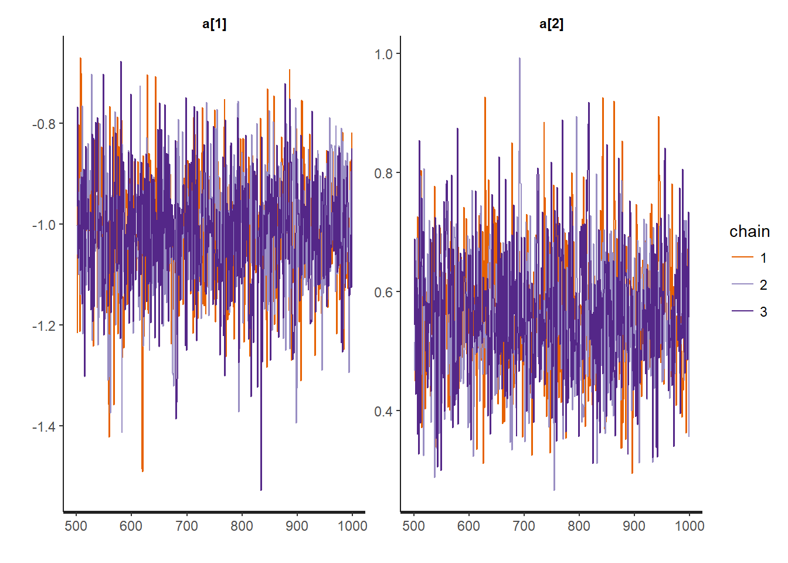
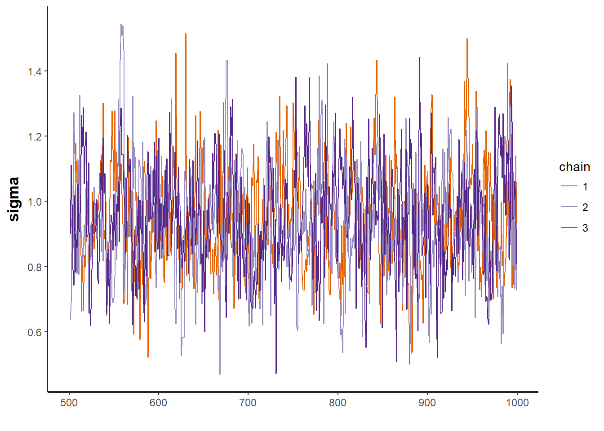
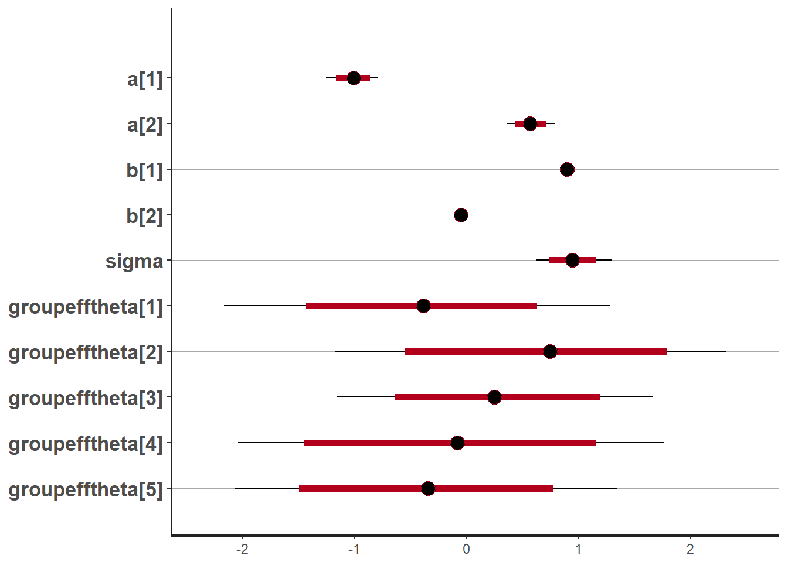
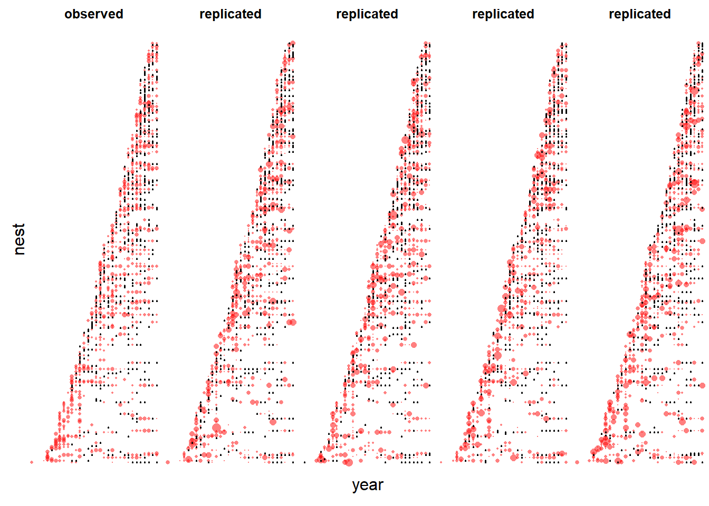
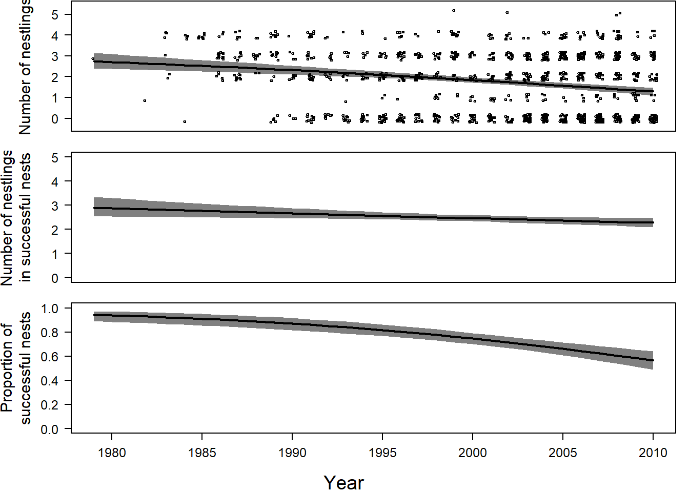

Advanced Bayesian model example
Jes, Lizzie
Assigned Reading:
Section 14.2 in Korner-Nievergelt et al. 2015. Bayesian data analysis in ecology using linear models with R, BUGS, and Stan. Elsevier. link
Optional Reading:
Chapters 16 and 17 in Korner-Nievergelt et al. 2015. Bayesian data analysis in ecology using linear models with R, BUGS, and Stan. Elsevier. link
* These chapters contain a data analysis checklist and information on how to report analyses in scientific papers. Chapter 17 is particularly useful because it gives verbatim text for how you should describe the models that you fit.
Key Points
We want to fit a zero-inflated Poisson mixed-effects model, but the hurdle() and zeroinfl() functions from the pscl package don’t allow random effects. A Bayesian approach is more flexible and will allow us to fit this model.
The Model
Today’s example is a zero-inflated Poisson model with a random intercept in the portion of the model controlling zero-inflation. This example is taken directly from Section 14.2 of Korner-Nievergelt et al. (2015). (See above citation.)
In the following model, the subscript \(i\) denotes a specific nestID and the subscript \(t\) denotes a specific sampling year. Bold variables are vectors.
Create an unobserved (latent) variable \(\mathbf{z}\) that equals 1 with probability \(\boldsymbol{\theta}\).
\[z_{it} \sim Bernoulli(\theta_{it})\]
If \(\mathbf{z}\) is 1, then the observed variable \(\mathbf{y}\) is 0. Otherwise, \(\mathbf{y}\) is Poisson distributed with mean \(\boldsymbol{\lambda}\) (I.e. This is a mixture model because \(\mathbf{y}\) can be 0 for two different reasons.)
\[y_{it} \sim Poisson(\lambda_{it}(1 - z_{it}))\]
The log odds that \(\mathbf{z}\) is 1 depends linearly on year (\(a_2\)) and different nestIDs are allowed to have different effects (\(\boldsymbol{\epsilon_{nestID}}\)) on the overall mean (\(a_1\))
\[logit(\theta_{it}) = a_1 + a_2 year_t + \epsilon_{nestID[i]}\]
However, the effects of different nestIDs are constrained to come from a Normal distribution with mean \(0\) and variance \(\sigma_n^2\). Hence they are a “random” effect.
\[\epsilon_{nestID} \sim Norm(0, \sigma_n)\]
If \(\mathbf{z}\) is \(0\), then (the log of) the expected value of \(\mathbf{y}\) depends linearly on year (\(b_2\)).
\[log(\lambda_{it}) = b_1 + b_2 year_t\]
Analysis Example
In review, the zero-inflated Poisson model is a mixture of binomial and a Poisson distribution. Like all mixed models, it addresses data generated by multiple processes, as seen in life sciences, and the distributions that result from such data. Neglecting these different processes could yield biased inferences. Using multi-level models are especially useful to help reveal the different processes underlying our data.
Count data typically contains a high proportion of zeros and varying data, as in our example of black-stork nestlings. The number of surviving nestlings is often zero due to depradation or natural events. Furthermore, in nests that succeed, numbers of surviving nestlings differ greatly across nests. Hence, these count data (or zero-inflated data) result from two distinct processes, one producing zero counts and one producing non-zero count variance. Recall the bimodal histogram of zero-inflated data, with one peak at zero and another at a greater value. To address zero-laden bimodal distributions, zero-inflated models blend a Bernoulli model (zero vs. nonzero) with a conditional Poisson model–conditional on the Bernoulli process being nonzero. To fit zero-inflated models, we use the function zeroinfl from the package pscl.
The question posed in our example is: Did the number of black-stork nestlings surviving in Latvia decline over time? The authors use a zero-inflated Poisson model to estimate temporal trends in nest survival and, separately, the number of surviving nestlings in extant nests. The nests were repeatedly measured over 17 years.
First steps: Read and prepare data for STAN Example data: Breeding success of Black-stork in Latvia. The data were collected and provided by Maris Stradz. They contain the number of nestlings of more than 300 black-stork nests in different years.
Read data
library(blmeco)## Loading required package: MASSdata(blackstork)
dat <- blackstork
# define nest as a factor
dat$nest <- factor(dat$nest)
# z-transform year
dat$year.z <- as.numeric(scale(dat$year))Prepare data for Stan
y <- dat$njuvs
N <- nrow(dat)
nest <- as.numeric(dat$nest)
Nnests <- nlevels(dat$nest)
year <- dat$year.z
datax <- c("y", "N", "nest", "Nnests", "year")Run STAN
Next, we load the Stan code from the text file. In the book, the authors use the function log_sum_exp to calculate the density function of the zero count. The function increment_log_prob defines likelihood in Stan; however, the updated Stan language uses target += u; instead. Functions bernoulli_log and poisson_log define the density functions’ logarithms; they’ve also been updated to bernoulli_lpdf and poisson_lpdf.
There appeared to be an issue with the original code in the book, namely with “sigmanest.” I changed it to “sigma” to solve the issue.
Once you run the stan() function, save the model object to an RData file. Then you can load the fitted model and samples without having to run the stan() function every time you re-open the R script: load(“code/05-C-stanmod.RData”).
library(rstan)## Loading required package: ggplot2## Loading required package: StanHeaders## rstan (Version 2.16.2, packaged: 2017-07-03 09:24:58 UTC, GitRev: 2e1f913d3ca3)## For execution on a local, multicore CPU with excess RAM we recommend calling
## rstan_options(auto_write = TRUE)
## options(mc.cores = parallel::detectCores())# Fit the model
# mod <- stan(file = "code/05-C.stan", data=datax, chains=3, iter=1000)
# Save the model output
# save(mod, file = "data/05-C-stanmod.RData")
# Re-load the model output
load("data/05-C-stanmod.RData")
# View the parameter estimates
print(mod, pars = c("a", "b", "sigma"))## Inference for Stan model: zeroinfl.
## 3 chains, each with iter=1000; warmup=500; thin=1;
## post-warmup draws per chain=500, total post-warmup draws=1500.
##
## mean se_mean sd 2.5% 25% 50% 75% 97.5% n_eff Rhat
## a[1] -1.01 0.00 0.12 -1.26 -1.09 -1.01 -0.94 -0.79 1500 1
## a[2] 0.57 0.00 0.11 0.36 0.50 0.56 0.64 0.79 1500 1
## b[1] 0.89 0.00 0.03 0.84 0.88 0.89 0.91 0.95 1500 1
## b[2] -0.05 0.00 0.02 -0.10 -0.07 -0.05 -0.04 -0.01 1500 1
## sigma 0.95 0.01 0.17 0.63 0.83 0.94 1.05 1.30 558 1
##
## Samples were drawn using NUTS(diag_e) at Thu Oct 26 16:14:33 2017.
## For each parameter, n_eff is a crude measure of effective sample size,
## and Rhat is the potential scale reduction factor on split chains (at
## convergence, Rhat=1).The mean in the first column is the average of the simulated values for each parameter’s marginal posterior distribution. se_mean refers to the standard error of the simulated values (Monte Carlo uncertainty). sd is the simulations’ sample standard deviation, corresponding to the parameter estimates’ standard error.
Look at convergence
traceplot(mod, "a")
traceplot(mod, "b")
traceplot(mod, "sigma")
Draw plots of the parameter estimates
plot(mod)## 'pars' not specified. Showing first 10 parameters by default.## ci_level: 0.8 (80% intervals)## outer_level: 0.95 (95% intervals)
Predictive model checking
Before interpreting results, we need to assess the model fit using predictive model checking. Accordingly, we first simulate replicated numbers of nestlings for every year and nest in the data set per the model fit.
Extract number of simulations
modsims <- extract(mod)
nsim <- length(modsims$lp_)
yrep <- matrix(nrow=length(y), ncol=nsim)
Xmat <- model.matrix(~year)
for(i in 1:nsim){
theta <- plogis(Xmat%*%modsims$a[i,] +
modsims$groupefftheta[i,nest])
z <- rbinom(length(y), prob=theta, size=1)
lambda <- (1-z) *exp(Xmat%*%modsims$b[i,])
yrep[,i] <- rpois(length(y), lambda=lambda)
}Sort the nests according to the first year for the plot
first <- tapply(year, nest, min)
first <- first[match(nest, 1:Nnests)]
nestnamenum <- first*1000 + nest
nestnamenum <- as.numeric(factor(nestnamenum))Visualize temporal pattern of zeros and non-zeros (Figure 14.3)
par(mfrow=c(1,5), mar=c(0,0,2,0.1), oma=c(2,2,0,0))
# First plot the real data
plot(year, nestnamenum, col=rgb(1,0,0,0.5), pch=16, cex=dat$njuv/5, axes=FALSE, main="observed")
points(year[dat$njuv==0], nestnamenum[dat$njuv==0], cex=0.3) # add zeros
# Add data from 4 simulated data-sets
for(r in 1:4){
plot(year, nestnamenum, col=rgb(1,0,0,0.5), pch=16, cex=yrep[,r]/5, axes=FALSE, main="replicated")
points(year[yrep[,r]==0], nestnamenum[yrep[,r]==0], cex=0.3) # add zeros
}
mtext("year", outer=TRUE, side=1)
mtext("nest", outer=TRUE, side=2)
Proportion of zeros for the observed data
mean(y==0)## [1] 0.3584071Proportion of zeros for the nsim simulated data
propzeros <- apply(yrep, 2, function(x) mean(x==0)) #
quantile(propzeros, prob=c(0.025, 0.5, 0.975))## 2.5% 50% 97.5%
## 0.3238938 0.3610619 0.3978097Examine results
apply(modsims$a, 2, quantile, prob=c(0.025, 0.5, 0.957))##
## [,1] [,2]
## 2.5% -1.2574025 0.3574230
## 50% -1.0082935 0.5648238
## 95.7% -0.8142124 0.7477373Recall that a represents number of zero-survivor nests. Hence, the positive slope indicates that the number of failed nests increased over the years.
apply(modsims$b, 2, quantile, prob=c(0.025, 0.5, 0.957))##
## [,1] [,2]
## 2.5% 0.8408008 -0.09805964
## 50% 0.8936011 -0.05476657
## 95.7% 0.9382964 -0.01632295And the number of nestlings in successful nests (indicated by b) decreased over time, per the estimated slope of the Poisson model’s regression coefficient (-0.05).
Visualize results
Three regression lines will help us understand the results: (1) the proportion of successful nests, (2) the number of nestlings in successful nests, (3) the mean number of nestlings. To draw these lines, we need to create a new data frame with predictor variable “year.” Before fitting this model, we transform this variable and create a new matrix.
We then extract the posterior distributions’ means for the Bernoulli coefficients (“ahat”) and Poisson model (“bhat”). To calculate the estimated proportions of surviving nests, we subtract the Bernoulli model’s fitted values from 1. (Recall that zit = 1 denotes a dead nest.) Add the fitted value from the Poisson model, the average number of successful nests’ nestlings. We multiply the fraction of surviving nests by the mean number of nestlings for successful nests to yield the average number of nestlings per year, averaged over suriving and failed nests.
newdat <- data.frame(year=1979:2010)
newdat$year.z <- (newdat$year - mean(dat$year))/sd(dat$year)
Xmat <- model.matrix(~year.z, data=newdat)
ahat <- apply(modsims$a, 2, mean) # extract the estimates for a
bhat <- apply(modsims$b, 2, mean) # extract the estimates for b
newdat$propsfit <- 1-plogis(Xmat%*%ahat) # Proportion of nests that survived
newdat$nnestfit <- exp(Xmat%*%bhat)
newdat$avnnestfit<-newdat$propsfit*newdat$nnestfitUsing nsim, we can repeat the preceding calculations with each set of model parameters–a novel MCMC iteration. And we bound every fitted value using the 2.5% and 97.5% quantiles as the lower and upper limits of a 95% CrI.
nsim <- length(modsims$lp_)
propsmat <- matrix(ncol=nsim, nrow=nrow(newdat))
nnestmat <- matrix(ncol=nsim, nrow=nrow(newdat))
avnnestmat <- matrix(ncol=nsim, nrow=nrow(newdat))
for(i in 1:nsim){
propsmat[,i] <- 1-plogis(Xmat%*%modsims$a[i,])
nnestmat[,i] <- exp(Xmat%*%modsims$b[i,])
avnnestmat[,i] <- propsmat[,i]*nnestmat[,i]
}
newdat$propslwr <- apply(propsmat, 1, quantile, prob=0.025)
newdat$propsupr <- apply(propsmat, 1, quantile, prob=0.975)
newdat$nnestlwr <- apply(nnestmat, 1, quantile, prob=0.025)
newdat$nnestupr <- apply(nnestmat, 1, quantile, prob=0.975)
newdat$avnnestfit <- newdat$propsfit*newdat$nnestfit
newdat$avnnestlwr <- apply(avnnestmat, 1, quantile, prob=0.025)
newdat$avnnestupr <- apply(avnnestmat, 1, quantile, prob=0.975)To visualize the regression lines (Figure 14.4)
par(mfrow=c(3,1), mar=c(1.5,5.5,0.1,1), oma=c(3,0,0,0))
# a) Number of nestlings
plot(dat$year, dat$njuvs, xlab="Year", type="n", las=1,
ylab="Number of nestlings", xaxt="n",
cex.axis=1.2, cex.lab=1.4, ylim=c(-0.4, 5.4))
polygon(c(newdat$year, rev(newdat$year)),
c(newdat$avnnestlwr, rev(newdat$avnnestupr)),
border=NA, col=grey(0.5))
lines(newdat$year, newdat$avnnestfit, lwd=2)
points(jitter(dat$year), jitter(dat$njuvs), cex=0.5)
# b) Number of Nestlings in successful nests
plot(dat$year, dat$njuvs, xlab="Year", type="n",las=1,
ylab="Number of nestlings\nin successful nests", xaxt="n",
cex.axis=1.2, cex.lab=1.4)
polygon(c(newdat$year, rev(newdat$year)), c(newdat$nnestlwr,
rev(newdat$nnestupr)),
border=NA, col=grey(0.5))
lines(newdat$year, newdat$nnestfit, lwd=2)
# c) Proportion of successful nests
plot(dat$year, seq(0,1, length=nrow(dat)), xlab="Year", type="n",
ylab="Proportion of\nsuccessful nests",las=1,
cex.axis=1.2, cex.lab=1.4)
polygon(c(newdat$year, rev(newdat$year)), c(newdat$propslwr,
rev(newdat$propsupr)),
border=NA, col=grey(0.5))
lines(newdat$year, newdat$propsfit, lwd=2)
mtext("Year", outer=TRUE, side=1, line=2, cex=1.2)
Discussion Questions
- Cold pizza from Nicole’s discussion Wednesday: What’s the golden rule when it comes to choosing optimal priors? They should not be (1) too strong, so that they are not providing us with additional information (not found in the dataset - too much overlap between prior and posterior), but also not too weak (2) to not influence the results due to lack of prior knowledge. Is there a better way than exploring different options via trail and error?
- What are potential shortcomings of using the zero-inflated model, for instance, in the case of having a high correlation of the model parameters between the zero model and the count model? How do you address such problems?
- What other information would be helpful to validate your zero-inflated model?
- What’s it all about, Alfie?
Updated model code
The 05-C.stan used old functions that will be removed from the next version of Stan (increment_log_prob()). The code file 05-C-updated.stan replaces these functions with their new version.
# Note: Compile and run the model for a few iterations to make sure everything is working.
mod <- stan(file = "code/05-C-updated.stan", data = datax, chains = 3, iter = 10)## In file included from C:/Program Files/R/R-3.3.1/library/BH/include/boost/config.hpp:39:0,
## from C:/Program Files/R/R-3.3.1/library/BH/include/boost/math/tools/config.hpp:13,
## from C:/Program Files/R/R-3.3.1/library/StanHeaders/include/stan/math/rev/core/var.hpp:7,
## from C:/Program Files/R/R-3.3.1/library/StanHeaders/include/stan/math/rev/core/gevv_vvv_vari.hpp:5,
## from C:/Program Files/R/R-3.3.1/library/StanHeaders/include/stan/math/rev/core.hpp:12,
## from C:/Program Files/R/R-3.3.1/library/StanHeaders/include/stan/math/rev/mat.hpp:4,
## from C:/Program Files/R/R-3.3.1/library/StanHeaders/include/stan/math.hpp:4,
## from C:/Program Files/R/R-3.3.1/library/StanHeaders/include/src/stan/model/model_header.hpp:4,
## from file2c4c268f9f.cpp:8:
## C:/Program Files/R/R-3.3.1/library/BH/include/boost/config/compiler/gcc.hpp:186:0: warning: "BOOST_NO_CXX11_RVALUE_REFERENCES" redefined
## # define BOOST_NO_CXX11_RVALUE_REFERENCES
## ^
## <command-line>:0:0: note: this is the location of the previous definition
## cc1plus.exe: warning: unrecognized command line option "-Wno-ignored-attributes"
##
## SAMPLING FOR MODEL '05-C-updated' NOW (CHAIN 1).
##
## Gradient evaluation took 0 seconds
## 1000 transitions using 10 leapfrog steps per transition would take 0 seconds.
## Adjust your expectations accordingly!
##
##
## WARNING: No variance estimation is
## performed for num_warmup < 20
##
## Iteration: 1 / 10 [ 10%] (Warmup)
## Iteration: 2 / 10 [ 20%] (Warmup)
## Iteration: 3 / 10 [ 30%] (Warmup)
## Iteration: 4 / 10 [ 40%] (Warmup)
## Iteration: 5 / 10 [ 50%] (Warmup)
## Iteration: 6 / 10 [ 60%] (Sampling)
## Iteration: 7 / 10 [ 70%] (Sampling)
## Iteration: 8 / 10 [ 80%] (Sampling)
## Iteration: 9 / 10 [ 90%] (Sampling)
## Iteration: 10 / 10 [100%] (Sampling)
##
## Elapsed Time: 0.084 seconds (Warm-up)
## 0.007 seconds (Sampling)
## 0.091 seconds (Total)
##
##
## SAMPLING FOR MODEL '05-C-updated' NOW (CHAIN 2).
##
## Gradient evaluation took 0.001 seconds
## 1000 transitions using 10 leapfrog steps per transition would take 10 seconds.
## Adjust your expectations accordingly!
##
##
## WARNING: No variance estimation is
## performed for num_warmup < 20
##
## Iteration: 1 / 10 [ 10%] (Warmup)
## Iteration: 2 / 10 [ 20%] (Warmup)
## Iteration: 3 / 10 [ 30%] (Warmup)
## Iteration: 4 / 10 [ 40%] (Warmup)
## Iteration: 5 / 10 [ 50%] (Warmup)
## Iteration: 6 / 10 [ 60%] (Sampling)
## Iteration: 7 / 10 [ 70%] (Sampling)
## Iteration: 8 / 10 [ 80%] (Sampling)
## Iteration: 9 / 10 [ 90%] (Sampling)
## Iteration: 10 / 10 [100%] (Sampling)
##
## Elapsed Time: 0.009 seconds (Warm-up)
## 0.005 seconds (Sampling)
## 0.014 seconds (Total)
##
##
## SAMPLING FOR MODEL '05-C-updated' NOW (CHAIN 3).
##
## Gradient evaluation took 0.001 seconds
## 1000 transitions using 10 leapfrog steps per transition would take 10 seconds.
## Adjust your expectations accordingly!
##
##
## WARNING: No variance estimation is
## performed for num_warmup < 20
##
## Iteration: 1 / 10 [ 10%] (Warmup)
## Iteration: 2 / 10 [ 20%] (Warmup)
## Iteration: 3 / 10 [ 30%] (Warmup)
## Iteration: 4 / 10 [ 40%] (Warmup)
## Iteration: 5 / 10 [ 50%] (Warmup)
## Iteration: 6 / 10 [ 60%] (Sampling)
## Iteration: 7 / 10 [ 70%] (Sampling)
## Iteration: 8 / 10 [ 80%] (Sampling)
## Iteration: 9 / 10 [ 90%] (Sampling)
## Iteration: 10 / 10 [100%] (Sampling)
##
## Elapsed Time: 0.017 seconds (Warm-up)
## 0.01 seconds (Sampling)
## 0.027 seconds (Total)# Then run the same model for more iterations.
#modfit <- stan(fit = mod, iter = 1000, chains = 3)